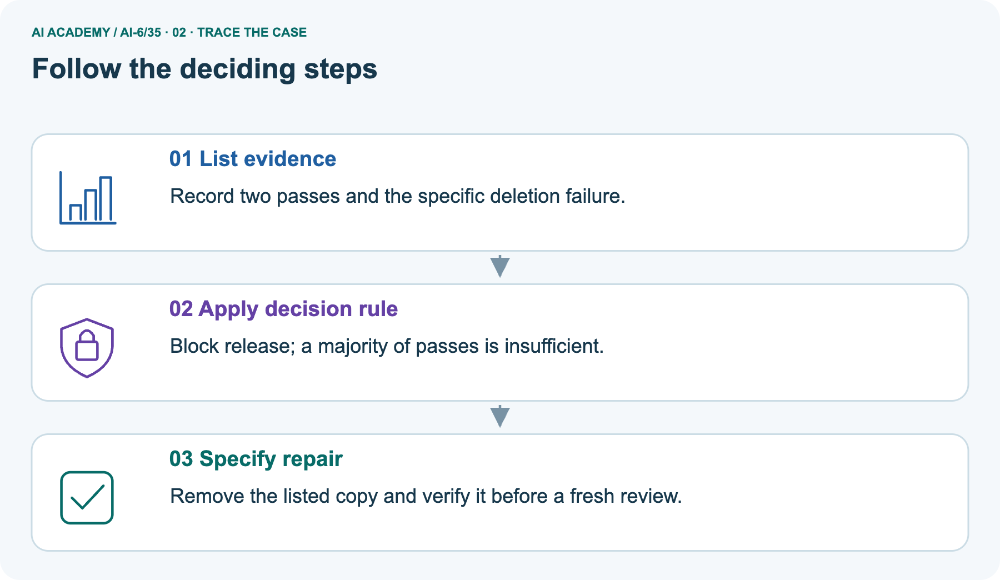
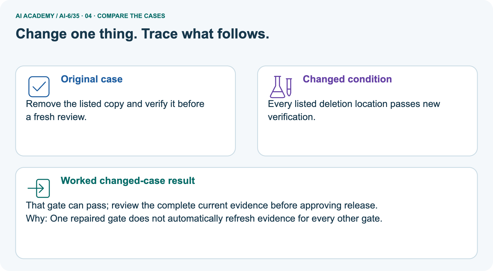
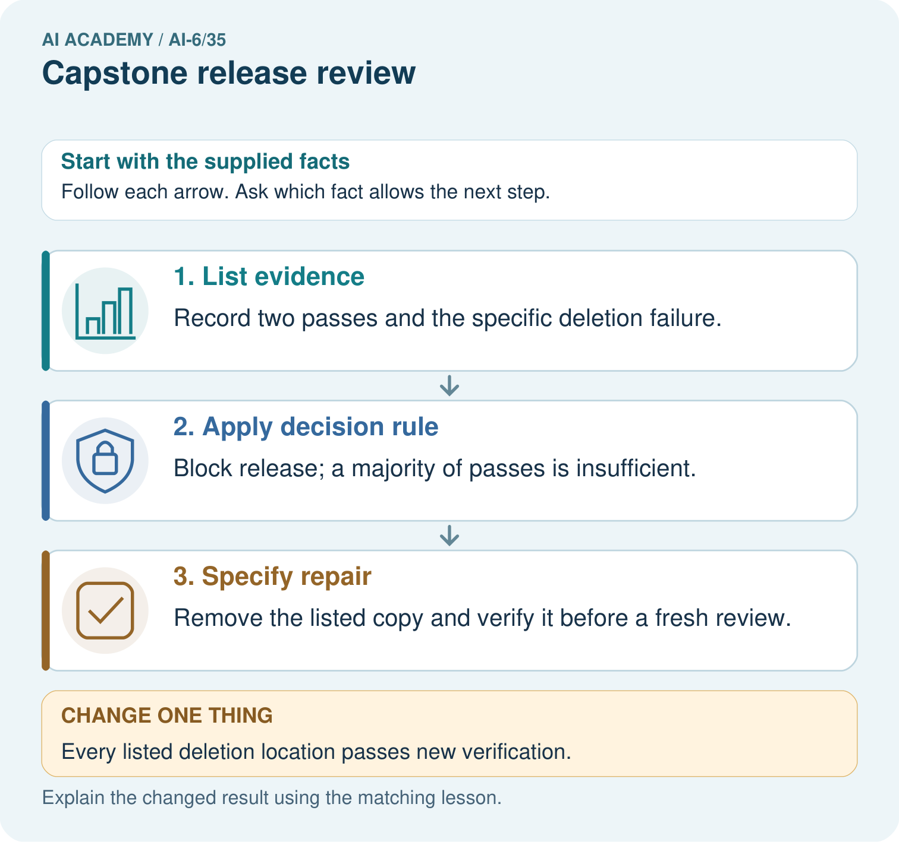
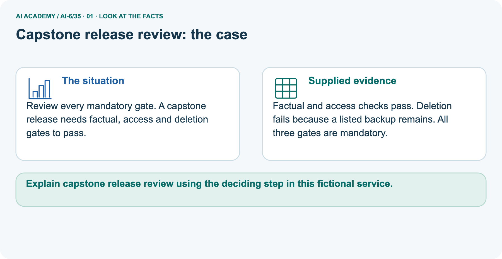
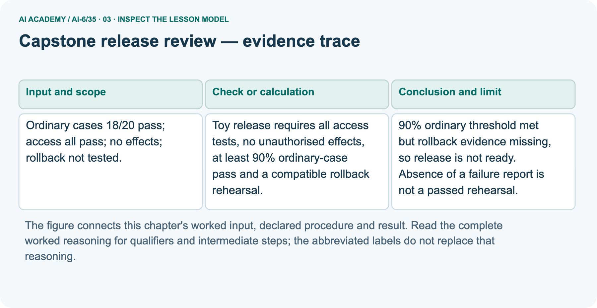
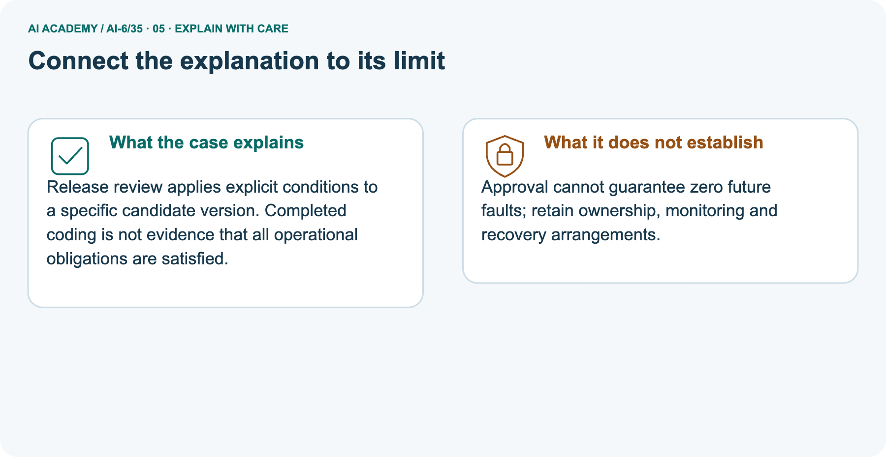
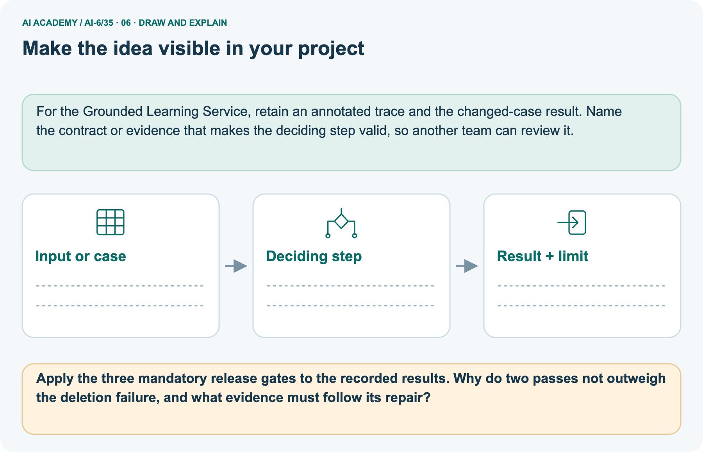

AI Academy · Level 6 · Grade 11 · Week 35 · Student lesson
Capstone release review
Learn to understand, design, build, test and explain AI systems responsibly.
Project: Grounded Learning Service
THE CONNECTED WEEK
List every gate. Match the candidate. Preserve every review.
Evaluate versioned release evidence without treating missing checks, old passes or majority votes as readiness.
Keep one habit: Gate contract → main untested-recovery ledger → backup-deletion picture → evidence/version probes → review/history model → independent access failure.
Main lesson · Section 1
Review every mandatory gate for the candidate being assessed
Missing, failed and wrong-version evidence cannot count as a pass.
Learning goals
I can explain the mechanism and terminology of capstone release review.
I can apply the stated procedure to a new case with a traceable result.
I can identify an assumption or limitation and design a revealing follow-up.
Retrieve capstone matrices and compatible recovery
Close your notes first. A rough first answer helps us choose the right starting point; it is not a score for your ability.
Without opening the old lesson, explain one key idea from Capstone failure testing. Give an example and a mistake that the idea helps you avoid.
Without opening the old lesson, explain one key idea from Documentation and operational readiness. Give an example and a mistake that the idea helps you avoid.
Without opening the old lesson, explain one key idea from Performance and cost experiments. Give an example and a mistake that the idea helps you avoid.
After trying, check the relevant lesson or ask your teacher. Change the part of your explanation that the evidence shows was wrong.
Prerequisite and starting response
Recall Capstone failure testing. Explain why a recorded result needs its input conditions and evidence source before it can support a claim.
End goal
Explain capstone release review using the deciding step in this fictional service.
Earlier wording, alternatives and picture transcripts
Your learning target
Remember before reading
This week you will practise:
Explain the mechanism and terminology of capstone release review
Apply the stated procedure to a new case with a traceable result
Identify an assumption or limitation and design a revealing follow-up
Retrieve what you already know
This week’s end goal
Main lesson · Section 2
Define the candidate, required gates and evidence states
Do not turn absence of a failure report into a passed rehearsal.
Begin with a missing required trip check
Imagine a school trip meets its learning goals but nobody has checked the return transport. Three reassuring results do not fill the missing required check. A release review works similarly: list every mandatory condition, attach versioned evidence and keep pass, fail and not run distinct. A rate can meet its threshold while recovery is still untested.
The review must name the candidate and the evidence scope, rather than vote on the majority of green boxes.
Define capstone release review
Release review combines correctness, access, failure recovery and operational readiness. Critical gates can block release independently of an average score.
Complete fictional gate and evidence contract
| Review contract | Complete fictional rule |
|---|---|
| Main candidate | r2; evidence records must match the reviewed candidate |
| Ordinary cases | At least 90%; main 18/20 exactly meets the threshold |
| Access | All declared access tests must pass |
| Effects | No unauthorized effects in the declared trace checks |
| Recovery | Compatible rollback rehearsal must have passing evidence; not run blocks |
| Evidence record | Gate state pass/fail/not_run, candidate version and reference for any supplied pass/fail |
| Separate picture | p2 requires factual, access and deletion gates; factual/access pass, listed backup residual makes deletion fail |
| Repair review | New p3 evidence must cover the current candidate; stale p2 passes cannot silently count for p3 |
| Decision scope | Eligibility under supplied fictional gates, not actual deployment or human approval |
| Limits | Constructed evidence IDs/states are not executed checks; listed-copy verification is not unknown-copy deletion proof |
Name supplied and missing evidence
Earlier wording, alternatives and picture transcripts
Begin by writing the question the procedure is intended to answer. Identify the information already supplied, the information it will produce and the information still missing.
These are constructed classroom examples; they do not require live accounts, private records or an external service. Do not treat a plausible explanation as a measured outcome.
Main lesson · Section 3
Trace a met score threshold with untested recovery
Report each gate separately before the overall decision.
Original mandatory release conditions
Toy release requires all access tests, no unauthorised effects, at least 90% ordinary-case pass and a compatible rollback rehearsal. Record each gate separately with versioned evidence.
Complete main gate ledger
| Main r2 gate | Supplied evidence | Gate judgment |
|---|---|---|
| Ordinary cases | 18/20 = 90% | Pass at inclusive 90% threshold |
| All access tests | Supplied passing fixture record | Pass within declared cases |
| No unauthorized effects | Supplied clean fixture trace | Pass within declared trace |
| Compatible rollback rehearsal | Not run | Missing required evidence; blocks eligibility |
| Overall main review | Three supplied passes cannot fill rehearsal gap | Not ready under all-mandatory rule |
State missing evidence and candidate version
Before applying the procedure, write its units, denominator or decision boundary where relevant. A partner should be able to repeat each step using the same inputs.
If a required input is absent or violates the stated contract, record that condition explicitly instead of quietly replacing it with a convenient value.
Explain the visual
Point to the input, the deciding step and the result in this week’s visual. Explain the same step in ordinary words. A picture helps when you can say what each part represents.
Earlier wording, alternatives and picture transcripts
Capstone release review — evidence trace
Connect the picture and the explanation
Main lesson · Section 4
Predict newly verified deletion without erasing history
Recheck the candidate’s applicable gates rather than overwriting an old failure.
Current task and response
Ordinary cases 18/20 pass; access all pass; no effects; rollback not tested. Show the intermediate steps and give the conclusion with its scope.
Predict new listed-location verification
Change: Every listed deletion location passes new verification.
Check after predicting
Prediction: That gate can pass; review the complete current evidence before approving release.
Reason: One repaired gate does not automatically refresh evidence for every other gate.
Earlier wording, alternatives and picture transcripts
Compare a familiar case with a changed case
Change one thing in the pictured case
Main lesson · Section 6
Read the residual backup failure and current-candidate repair evidence
Keep main rollback requirements separate from the picture’s three-gate example.
Main untested-rollback review and checked conclusion
Ordinary cases 18/20 pass; access all pass; no effects; rollback not tested.
90% ordinary threshold met but rollback evidence missing, so release is not ready. Absence of a failure report is not a passed rehearsal.
Compare the intermediate evidence with the final statement. Explain why each number or decision follows from the stated inputs. The conclusion belongs to this scenario and procedure; changing the inputs, evaluation population or authority can change what it establishes. Retain only authorized, minimized versioned review evidence without secret values or unnecessary private content so a later revision can be compared honestly.
Separate three-gate picture and versioned repair scope
Review every mandatory gate. A capstone release needs factual, access and deletion gates to pass.
Factual and access checks pass. Deletion fails because a listed backup remains. All three gates are mandatory.
The picture has a separate three-gate contract: factual, access and deletion. Candidate p2 passes factual/access but fails deletion because a listed backup copy remains. Two passes cannot outweigh that mandatory failure.
A repaired p3 candidate needs new verification for every listed deletion location and applicable current factual/access evidence; the local code illustrates stale p2 records blocking p3, then separately supplied matching p3 passes. All states are hypothetical fixture inputs, not real checks or deleted backups. Preserve the original failure and each later review.
If all three current pictured gates pass, that satisfies only the declared fictional gate set; it does not automatically deploy, grant human approval or guarantee zero future faults.
Trace evidence, mandatory rule and required verification



Read the picture one step at a time
Release review applies explicit conditions to a specific candidate version. Completed coding is not evidence that all operational obligations are satisfied.
Predict all listed deletion locations newly verified
Change one thing: Every listed deletion location passes new verification. Predict the result before checking the explanation. What remains the same?
Check after predicting



Explain future-fault limits and repair evidence
Approval cannot guarantee zero future faults; retain ownership, monitoring and recovery arrangements.
Read the labelled picture: Apply the three mandatory release gates to the recorded results. Why do two passes not outweigh the deletion failure, and what evidence must follow its repair?
Earlier wording, alternatives and picture transcripts
Learn from the worked case
Cover the result before checking it. Say what is given, choose the procedure, and follow one step at a time. Then uncover the result and explain your first mismatch. Ask why a step is allowed, not only what number it produces.
A pictorial worked case: Capstone release review
The facts we will use



Why this result follows
What this example does not establish
Main lesson · Section 7
Audit missing evidence, stale versions and majority-vote reasoning
Keep gate eligibility distinct from deployment and assurance claims.
Core release-review qualification and failure analysis
Release readiness is scoped to the declared gates and environment; deployment still needs operational checks.
A useful check asks what would make the reasoning fail. Distinguish a failure to execute the declared procedure from a weakness in the procedure itself.
The first may require a correction; the second requires an explicitly revised method and new evidence. Preserve unsuccessful cases so an improved result cannot hide the original problem.
Complete evidence-state and version probes
| Release-review probe | Expected interpretation |
|---|---|
| Ordinary rate exactly 90% | Meets the at-least threshold |
| All other gates pass but rollback not run | Not eligible; missing rehearsal evidence |
| Two passes and mandatory deletion failure | Blocked; no majority vote |
| Pass/fail state has no evidence reference | Reject incomplete supplied evidence record |
| Old candidate’s pass reused after candidate changes | Wrong-version evidence blocks current review until applicability is established |
| All listed locations newly pass | Scoped verification; unknown stores still outside claim |
| All declared current gates pass | Eligible under that fictional gate set, not automatic deployment or human sign-off |
| Repair succeeds on a new review | Preserve original failed case and earlier decision |
| Approval granted in a real process | Still no guarantee of zero future faults; retain ownership, monitoring and recovery |
Guided repair and explanation
A report omits this qualification: Release readiness is scoped to the declared gates and environment; deployment still needs operational checks.
Explain how omitting it could change a reader's interpretation, and write an accurate replacement.
Earlier wording, alternatives and picture transcripts
Locate the earliest unsupported step
Main lesson · Section 8
Practise explaining the specific blocker
Use the recorded gate condition rather than a reassuring average.
Current explanation and guided check
Explain the weekly mechanism in your own words. Use the worked scenario to name its input, decision rule and output.
Supported W2 trace
Use workbook W2 for the connected example “Capstone release review”. First fill the input and rule boxes. Try the middle steps before asking for a hint. After a hint, try the next step yourself.
| Plan | Do | Check |
|---|---|---|
| What is given? Which rule or procedure applies? | Record each intermediate step. | Does the result follow? What remains unknown? |
Explain your trace to a partner. Your partner points to one step to check. Swap roles on the next case. Each person writes their own explanation.
Individual scope check
Use the worked case for Capstone release review. Proposed explanation: “The worked result establishes every future case”. Decide whether this explanation is supported.
Point to the step or supplied fact that decides; explain your repair if needed.
Answer on your own before discussion. If you are unsure, say which step you need help with.
Picture response
Apply the three mandatory release gates to the recorded results. Why do two passes not outweigh the deletion failure, and what evidence must follow its repair?
Reserve the selected 27/30 access-failure case
This is supported practice. Keep the separately named independent case for an attempt before feedback.
Earlier wording, alternatives and picture transcripts
Practise with less help: Trace the worked case
Check your reasoning
Explain the picture
Main lesson · Section 9
Run the complete versioned evidence-state review
Inspect blockers, candidate matching and preserved decision history.
Current ordinary-pass/untested-rollback investigation
Ordinary cases 18/20 pass; access all pass; no effects; rollback not tested. Show the intermediate steps and give the conclusion with its scope.
Runnable fictional gate review
"""Versioned fictional gate records; no approvals, deletion or deployment."""
from copy import deepcopy
from fractions import Fraction
def ordinary_gate(passed,total):
if type(passed) is not int or type(total) is not int or total<=0 or not 0<=passed<=total:
raise ValueError('valid exact counts required')
return Fraction(passed,total)>=Fraction(9,10)
def gate(state,candidate,evidence_id=None):
return {'state':state,'candidate':candidate,'evidence_id':evidence_id}
def review(candidate,required,evidence):
if type(candidate) is not str or not candidate:raise ValueError('candidate version required')
if type(required) is not set or not required or any(type(k) is not str or not k for k in required):
raise ValueError('nonempty declared gate-name set required')
if type(evidence) is not dict or set(evidence)-required:raise ValueError('only declared gate records accepted')
blockers=[]
for name in sorted(required):
record=evidence.get(name)
if record is None:blockers.append((name,'missing'));continue
if type(record) is not dict or set(record)!={'state','candidate','evidence_id'}:raise ValueError('exact evidence record fields required')
if record['state'] not in ('pass','fail','not_run'):raise ValueError('explicit gate state required')
if record['state']!='not_run' and (type(record['evidence_id']) is not str or not record['evidence_id']):
raise ValueError('pass/fail needs a supplied evidence reference')
if record['candidate']!=candidate:blockers.append((name,'wrong candidate version'))
elif record['state']!='pass':blockers.append((name,record['state']))
return {'candidate':candidate,'eligible_under_declared_fixture_gates':not blockers,'blockers':blockers}
main_required={'ordinary','access','no_unauthorized_effects','compatible_rollback'}
main_records={'ordinary':gate('pass' if ordinary_gate(18,20) else 'fail','r2','ORD-18-20'),
'access':gate('pass','r2','ACCESS-MAIN'),
'no_unauthorized_effects':gate('pass','r2','TRACE-MAIN'),
'compatible_rollback':gate('not_run','r2')}
main=review('r2',main_required,main_records)
assert ordinary_gate(18,20) and main['blockers']==[('compatible_rollback','not_run')]
# Separate picture declares three gates, not the main example's four-gate set.
picture_required={'factual','access','deletion'}
failed_records={'factual':gate('pass','p2','FACT-P2'),'access':gate('pass','p2','ACCESS-P2'),
'deletion':gate('fail','p2','BACKUP-RESIDUAL-P2')}
failed_before=deepcopy(failed_records);initial=review('p2',picture_required,failed_records)
assert initial['blockers']==[('deletion','fail')]
# Constructed repaired candidate evidence; no real copy is deleted or check performed.
stale_repair={**failed_records,'deletion':gate('pass','p3','ALL-LISTED-LOCATIONS-P3')}
stale=review('p3',picture_required,stale_repair)
assert not stale['eligible_under_declared_fixture_gates']
fresh_records={name:gate('pass','p3','FIXTURE-'+name.upper()+'-P3') for name in picture_required}
fresh=review('p3',picture_required,fresh_records)
history=[deepcopy(initial),deepcopy(stale),deepcopy(fresh)]
assert fresh['eligible_under_declared_fixture_gates'] and failed_records==failed_before
assert history[0]['blockers']==[('deletion','fail')]
print('Main 18/20 = 90 percent; ordinary threshold met; review:',main)
print('Picture initial deletion failure:',initial)
print('Repaired deletion but stale other-version evidence:',stale)
print('All pictured gates freshly supplied for candidate p3:',fresh)
print('Original failure preserved:',failed_records==failed_before,'history:',history)
print('These evidence IDs/states are constructed inputs, not test execution or human sign-off. Eligibility under a declared toy gate set does not deploy/approve anything, prove unknown-copy deletion or guarantee zero future faults.')
Expected decisions and evidence limits
Predict which main gate blocks r2 despite 18/20 meeting 90%. In the separate picture, p2 blocks on deletion. A hypothetical p3 deletion pass with old p2 factual/access evidence still blocks; separately supplied matching p3 gate passes yield eligibility under that three-gate contract. The history retains the initial failure and intermediate stale-evidence decision.
The code evaluates constructed records; it performs no actual access test, rollback rehearsal, deletion, approval or deployment. Do not describe its fixture evidence IDs as human sign-off or newly measured real results. Mark a paper-only trace “not run”.
Evidence ledger and reflection
| Record | Your evidence |
|---|---|
| Given input and fixed rule | |
| Prediction before checking | |
| Actual result, or “not run” | |
| First mismatch and one explanation | |
| Boundary or missing input and expected response |
On paper, trace the supplied procedure. If code is provided, predict before running it in a local practice file. Never write an expected answer as though it were an observed run.
Before trying: what do I expect, and why? While trying: which step could first go wrong? Afterwards: what did I actually observe, and what should change? Keep “not run” if you only traced the procedure.
Earlier wording, alternatives and picture transcripts
Predict, investigate and preserve the evidence
Plan → try → check
Main lesson · Section 14
Try alone: ordinary threshold met but access fails
Apply every mandatory condition before deciding.
Complete selected independent task
Ordinary 27/30 pass; access 1/5 fails; rollback passes; no effects. Decide.
First attempt and support record
Attempt this case before feedback. Record any help. Earlier examples below are further practice; a case already practised with feedback cannot establish fresh transfer.
Feedback after trying
Attempt the independent case before hints. Record whether you worked alone, used a hint or followed a model. After feedback, fix the first unsupported step and explain why it changed.
A later check uses a changed case, not a copied answer.
Earlier wording, alternatives and picture transcripts
Independent case: Apply a new case independently
Attempt this without hints
Ordinary 27/30 pass; access 1/5 fails; rollback passes; no effects. Decide.
Record support used: none, hint or teacher explanation. After feedback, a different case is needed to demonstrate independence.
Use feedback to improve
Main lesson · Section 11
Save the candidate manifest, gate references and original failures
Keep review eligibility separate from any later authorized release action.
Project task and artifact
For Grounded Learning Service, use this week’s independent task as a rehearsal for the final evidence pack: Ordinary 27/30 pass; access 1/5 fails; rollback passes; no effects. Decide.
Keep actual observations separate from expected results, preserve failures, compare a baseline and explain the limits.
| Project evidence | Record |
|---|---|
| Component and version | |
| Inputs permitted at prediction time | |
| Trace and comparison with earlier work | |
| Failure, limit and human review |
Actual local audit run or paper trace and limitations
For the Grounded Learning Service, retain an annotated trace and the changed-case result. Name the contract or evidence that makes the deciding step valid, so another team can review it.
Earlier wording, alternatives and picture transcripts
Evidence for your project
Main lesson · Section 16
Explain the current blocker and evidence needed for a fresh review
A missing test is not a passed test.
Retrieve and explain
Close your notes. Explain this goal in your own words: Explain the mechanism and terminology of capstone release review
Plan a changed-case return
If you are unsure, return to the worked picture and explain one arrow. If you are ready, change an input or assumption and justify your prediction.
Save your workbook evidence. At the next review, try a different case before opening your old answer.
Reference bank and extra practice
Choose the reference that helps your next step.
Reference · Use service vocabulary precisely
Reference · Section 5
Reference · Use service vocabulary precisely
Connect each term to an input, operation, evidence source or outcome.
Vocabulary and your explanation
| Word | Meaning |
|---|---|
| Release review | A decision using versioned gate evidence |
| Critical gate | A requirement that cannot be averaged away |
| Rollback rehearsal | A tested recovery of a compatible version set |
Extra challenge · Explain a stronger case
Reference · Section 10
Extra challenge · Explain a stronger case
Choose the next challenge after the main route.
Explain,repair and extend
Explain the weekly mechanism in your own words. Use the worked scenario to name its input, decision rule and output.
A report omits this qualification: Release readiness is scoped to the declared gates and environment; deployment still needs operational checks.
Explain how omitting it could change a reader's interpretation, and write an accurate replacement.
For the worked scenario, propose one additional case that could reveal a failure, describe its expected outcome before running it, and explain what would need to remain fixed for a fair comparison.
Do not reuse W4 as a new final test after receiving feedback.
Explain → apply → challenge
Reference · Check the service reasoning and its limits
Reference · Section 12
Reference · Check the service reasoning and its limits
Use after practice; keep the selected independent case for its first attempt.
Current explanation and response
Complete the supported workbook tasks before attempting W4 independently. Record any hints or help used. After feedback, use the teacher's fresh retry rather than copying the earlier answer.
For a project, select a relevant new case, predict the outcome from the declared rule and preserve the result alongside any revision.
For the worked scenario, propose one additional case that could reveal a failure, describe its expected outcome before running it, and explain what would need to remain fixed for a fair comparison.
Do not reuse W4 as a new final test after receiving feedback.
Extra practice · Revisit the complete trace
Reference · Section 13
Extra practice · Revisit the complete trace
Predict before reading the supplied steps.
Complete trace and evidence
Complete evidence record
Capstone release review — evidence trace
Follow the input through the stated procedure to its result. Cover the result first, predict it, then explain every intermediate step. The text/table accompanies the figure so the example can be read without colour.
Reference · The earlier route checklist
Reference · Section 15
Reference · The earlier route checklist
Use one main route rather than repeating the lesson.
Targets,route and first prediction
Start with this question: Review every mandatory gate. A capstone release needs factual, access and deletion gates to pass.
| By the end, I can | How I will show it |
|---|---|
| Explain the mechanism and terminology of capstone release review | Explain the deciding step, show a trace or test, and state one limit. |
| Apply the stated procedure to a new case with a traceable result | Explain the deciding step, show a trace or test, and state one limit. |
| Identify an assumption or limitation and design a revealing follow-up | Explain the deciding step, show a trace or test, and state one limit. |
Remember → watch and explain → try with help → investigate → try independently → keep project evidence. Your teacher may spread this lesson across several classes.
Keep your first prediction. Compare it with what the evidence shows and explain any change.
Extra practice · Predict,check and repair
Reference · Section 17
Extra practice · Predict,check and repair
Keep supported feedback separate from the independent case.
First supported question and optional hint
Review every mandatory gate. A capstone release needs factual, access and deletion gates to pass.
Which labelled step matches this detail? Remove the listed copy and verify it before a fresh review.
1. List evidence
2. Specify repair
3. Apply decision rule
Hint if needed: Read the steps in the pictorial case. Match the supplied detail to the stage that performs or records it.
Practice 1: explain the deciding evidence
Check after the first attempt
After your attempt, compare with the supported explanation: Specify repair Remove the listed copy and verify it before a fresh review. Release review applies explicit conditions to a specific candidate version.
Completed coding is not evidence that all operational obligations are satisfied.
Changed-case question and optional hint
Changed-case practice: Every listed deletion location passes new verification. Which conclusion is supported by the supplied facts?
1. This one example guarantees correct results for every future input.
2. We can decide the result without examining the changed input or the procedure.
3. That gate can pass; review the complete current evidence before approving release.
Hint if needed: Use the changed condition and the deciding step in the pictorial trace. The answer must say what follows from those facts.
Practice 2: explain the deciding evidence
Check after the changed attempt
After your attempt, compare with the supported explanation: That gate can pass; review the complete current evidence before approving release. One repaired gate does not automatically refresh evidence for every other gate.
Repair and retain the record
Review Capstone failure testing (ai-6/34). Goal: Explain the mechanism and terminology of capstone failure testing. Short practice: Explain why retrieval success permits the checked 15:00 fallback when drafting fails.
What changes if retrieval fails too, and why can a template not fill that evidence gap?. Return to this week and explain what you changed.
Review Documentation and operational readiness (ai-6/32). Goal: Explain the mechanism and terminology of documentation and operational readiness. Short practice: Match SOURCE_UNAVAILABLE to its safe check and escalation owner.
What is lost when the maintainer route is removed, even if the diagnostic instructions stay readable?. Return to this week and explain what you changed.
Review Performance and cost experiments (ai-6/29). Goal: Explain the mechanism and terminology of performance and cost experiments. Short practice: Calculate per-case seconds and cost units for A and B.
Which meets a budget of at most 2 cost units per case, and what speed trade-off does that choice make?. Return to this week and explain what you changed.
Use Download completed work in the hosted lesson to export your answers, reflections, practice feedback and code-run evidence. Open the HTML copy to read or print it.
Drafts stay in this browser when storage is available; clear drafts on a shared device.
Earlier wording, alternatives and picture transcripts
Use this supported practice once, in the browser or on paper. Keep the reserved independent assessment for a separate first attempt before teacher feedback.
Repair a missing building block
Keep your completed work
Reference · Six-picture concept journey
Reference · Section 18
Reference · Six-picture concept journey
Choose the picture that supports the current explanation.
01. Capstone release review: the case



Review every mandatory gate. A capstone release needs factual, access and deletion gates to pass. Supplied facts: Factual and access checks pass. Deletion fails because a listed backup remains. All three gates are mandatory.
Point to the given fact that matters most. Explain why it matters.
02. Follow the deciding steps
List evidence: Record two passes and the specific deletion failure. → Apply decision rule: Block release; a majority of passes is insufficient. → Specify repair: Remove the listed copy and verify it before a fresh review.
Point to each numbered stage and explain which recorded input it uses.
03. Capstone release review — evidence trace



Capstone release review — evidence trace.
Ordinary cases 18/20 pass; access all pass; no effects; rollback not tested. | Toy release requires all access tests, no unauthorised effects, at least 90% ordinary-case pass and a compatible rollback rehearsal. | 90% ordinary threshold met but rollback evidence missing, so release is not ready.
Absence of a failure report is not a passed rehearsal.
Read the labels and values. Explain the relationship the model shows.
04. Change one thing. Trace what follows.
Original case: Remove the listed copy and verify it before a fresh review. Changed condition: Every listed deletion location passes new verification.
Expected result: That gate can pass; review the complete current evidence before approving release. Reason: One repaired gate does not automatically refresh evidence for every other gate.
Predict before checking the worked changed-case result. Name what changed and what the supplied facts allow you to conclude.
05. Connect the explanation to its limit



Release review applies explicit conditions to a specific candidate version. Completed coding is not evidence that all operational obligations are satisfied.
Limit: Approval cannot guarantee zero future faults; retain ownership, monitoring and recovery arrangements.
Explain the case, then point to a limit on the claim.
06. Make the idea visible in your project



For the Grounded Learning Service, retain an annotated trace and the changed-case result. Name the contract or evidence that makes the deciding step valid, so another team can review it.
Draw your input, deciding step, result and limit. Supported question: Apply the three mandatory release gates to the recorded results.
Why do two passes not outweigh the deletion failure, and what evidence must follow its repair?
Draw your project trace and justify the deciding step using evidence.